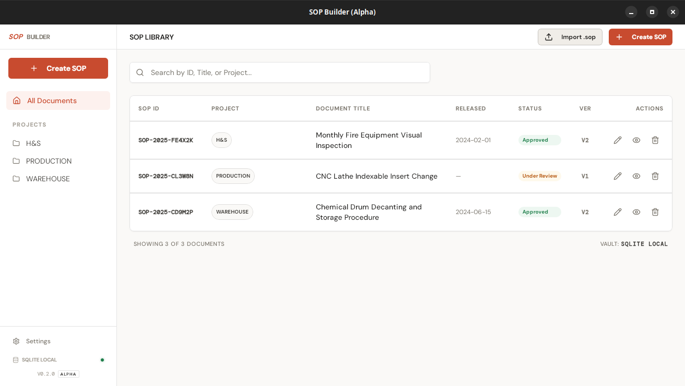
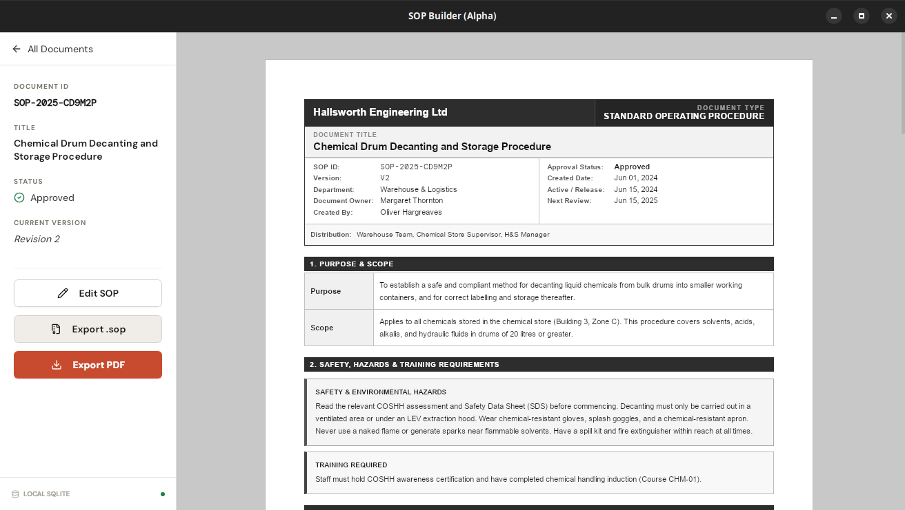
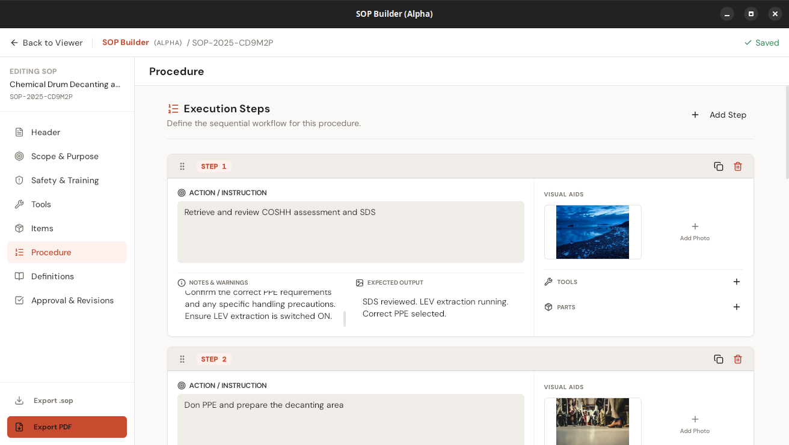
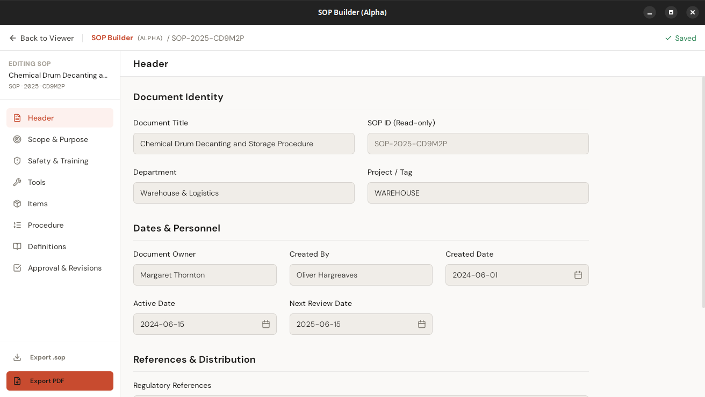
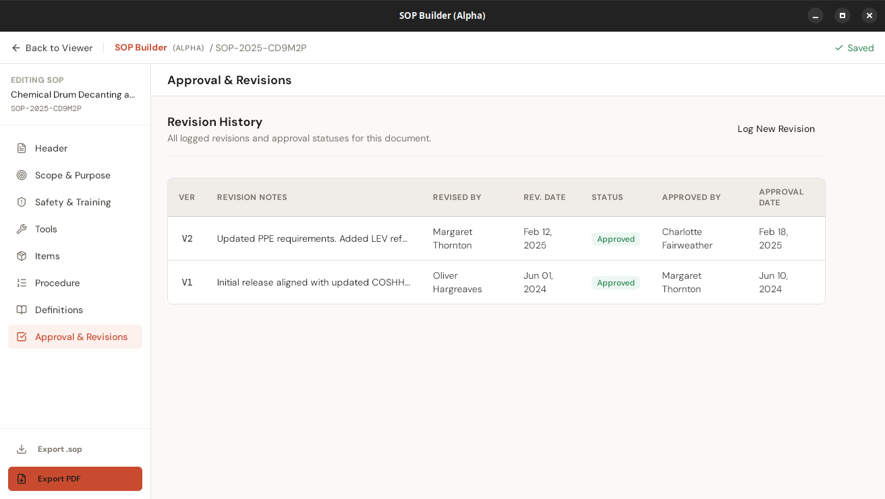

A professional-grade, offline-first desktop app for creating, editing, and exporting Standard Operating Procedures. No cloud. No login. No subscriptions.

Give it a title, fill in the purpose, scope, safety notes, and list the tools and materials required.
Add numbered steps with written instructions and annotated photos. Draw arrows, circles, and labels directly in the app.
Generate a print-ready PDF in one click, or export as a portable .sop bundle to share offline with anyone running SOP Builder.
All SOPs live in a local SQLite database on your machine. No account required, no data leaves your network.
Purpose, scope, safety notes, tools, items, and sequential steps — each field has a home. Auto-saves as you type.
Attach annotated photos to each step. Draw arrows, circles, and labels directly in the app.
Generate a printable, text-selectable PDF from any SOP in one click. No formatting work required.
Export any SOP as a self-contained .sop file. Share it offline, import it anywhere SOP Builder is installed.
Log every revision with notes, approver, and date. Full audit trail built in, no plugins needed.
Rewrite any prose field with one click using your own Anthropic, OpenAI, or Gemini API key. Improves clarity without changing your content.

Formatted document viewer

Step editor with visual aids

Structured document header

Full revision audit trail
Available for Windows, Linux, and macOS. Free to use, forever.
.sop bundles all work with no internet. The only exception is the optional AI text enhancement feature, which contacts the AI provider you configure — but that feature requires you to add your own API key and is never used unless you trigger it explicitly.
%APPDATA%\sop-builder. On Linux: ~/.local/share/sop-builder. On macOS: ~/Library/Application Support/sop-builder. Nothing is transmitted or synced anywhere.
.sop bundles from within the app — each bundle is self-contained with all images. You can also copy the entire database file from the app data directory. During the alpha period we recommend regular exports for anything you can't afford to lose.
.dmg from the releases page. On first launch, right-click the app → Open → Open to bypass the Gatekeeper warning (the app is unsigned). Intel Mac support is not available yet.